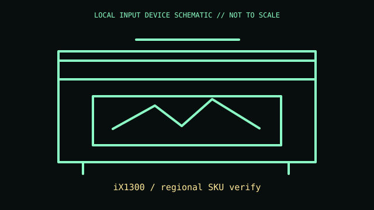

[ IMAGING AND AUDIO-CAPTURE PERIPHERALS // IDENTIFIED COMPONENT ]
Ricoh ScanSnap iX1300
Compact duplex document scanner with U-turn and return-path paper handling.

MODEL IDENTIFICATION: iX1300 / regional SKU verify. Confirm the printed SKU, revision, bundle, region, and included accessories before repair or compatibility claims.
Model specifications
| Catalog leaf | Imaging and audio-capture peripherals |
|---|---|
| Exact model / identifier | iX1300 / regional SKU verify |
| Mechanism and primary specifications | Duplex scanning up to 30 ppm at stated settings; 20-sheet ADF; USB and Wi-Fi; U-turn/return scan paths; AC supply. |
| Compatibility and interface caveats | Uses ScanSnap Home rather than general TWAIN/WIA workflow; speed and Wi-Fi functions depend on software, page conditions, and host. Exact bundle SKU varies by region. |
| Revision identification | Record the full label and software/firmware revision. Similar product-family names may use different protocols, components, connectors, or bundled accessories. |
Preservation and service
Clean rollers/glass using ScanSnap-approved materials; do not force the return path or feed folded/stapled pages; preserve guides.
Separate observed condition and test setup from vendor-published specifications; record host OS, driver/app version, cables, adapters, and accessories.
Primary manufacturer sources
- Ricoh ScanSnap iX1300 productManufacturer documentation; verify the exact SKU, revision, region, and accessories against the unit label.
- ScanSnap support and manualsManufacturer documentation; verify the exact SKU, revision, region, and accessories against the unit label.
Manufacturer support pages can change; retain the applicable manual and its revision in the physical equipment record.